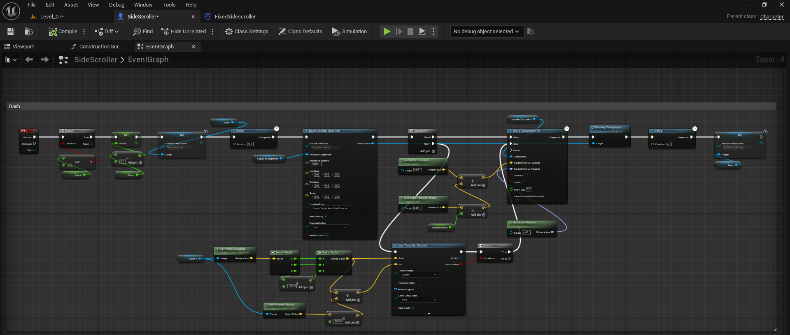
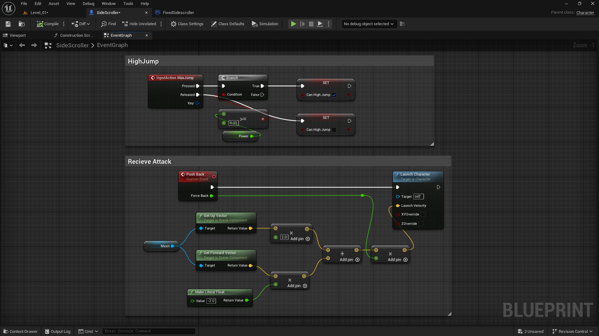
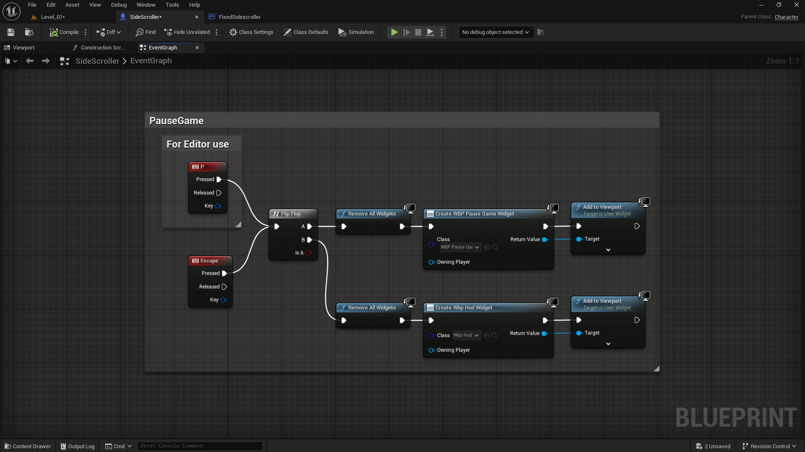
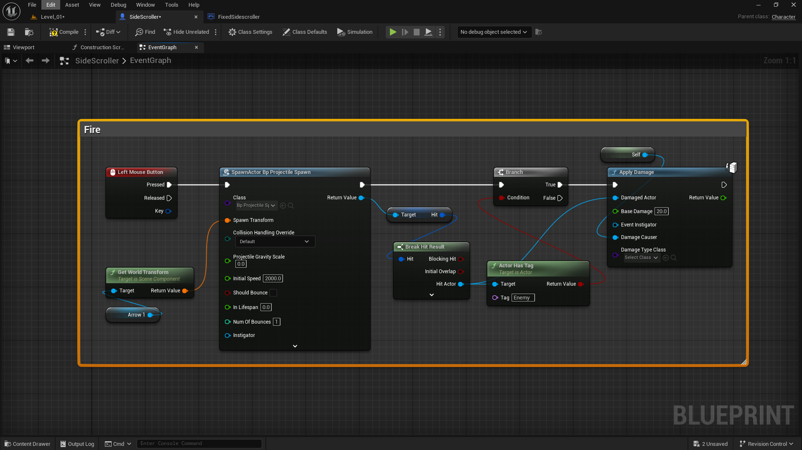

Overview
3D Side Scroller Game – Unreal Engine
Case File
3D Side Scroller Game – Unreal Engine
3D Side Scroller Game – Unreal Engine

Build Notes
For the dash mechanic, I created this Blueprint in the SideScroller character to allow the player to quickly move forward with a burst of speed. When the dash key is pressed, it checks if the dash is available, then adds forward velocity based on the player’s facing direction. I also used a line trace to detect collisions so the player doesn’t pass through obstacles. A particle effect is spawned during the dash for visual feedback, and a delay node controls both the dash duration and cooldown. Once the delay finishes, the dash becomes available again, making the movement smooth and responsive.

In this setup, I designed two separate functionalities inside my character blueprint. The first section, High Jump, handles the input action that lets the player perform a stronger jump when the condition is met. When the input is pressed, it checks if the player can perform a high jump and sets the “Can High Jump” boolean accordingly, applying additional power for an enhanced jump height. The second section, Receive Attack, focuses on the player’s reaction when hit by an enemy. I created a custom event called Push Back that calculates a directional force using the mesh’s forward and up vectors. These vectors are multiplied and combined to form a launch direction, which is then passed into the Launch Character node to push the player backward realistically, simulating a hit impact. This adds both dynamic response and feedback to the combat system.

I implemented a simple Pause and Resume system using Blueprints for testing directly inside the editor. Pressing either P or Escape triggers a Flip-Flop node that alternates between two states — pause and resume. In the first state (A), it removes all active widgets and creates the “WBP Pause Game” widget, adding it to the viewport to display the pause menu. In the second state (B), it again removes all widgets and creates the “WBP HUD” widget, bringing the player back to the gameplay interface.

I created the Take Damage logic for my player. Whenever the player receives any damage, the Event AnyDamage node subtracts the incoming damage value from the current health. If health becomes less than or equal to zero, it triggers the death sequence — playing a death sound, enabling simulate physics on the mesh, and disabling the player’s movement. After that, the blueprint creates and adds the Game Over Widget to the viewport and switches the input mode to Game and UI so the player can interact with the widget. If the player’s health goes above the maximum limit, it resets it back to the defined MaxHealth value to keep the gameplay balanced.

This setup defines the projectile firing mechanism for the character. When the Left Mouse Button is pressed, it triggers the Spawn Actor node to create a projectile from the character’s Arrow component using its world transform. The projectile is given an initial speed of 2000 and minimal gravity. Once spawned, the system checks for collisions — if the projectile hits an actor with the “Enemy” tag, the Apply Damage node deals 20 points of base damage to that actor. This logic ensures that firing only affects enemies and connects projectile spawning, collision detection, and damage application in one clean sequence.

I created a simple in-game timer using Blueprints. The system starts with an Event Tick that runs every frame but updates only once per second using a Delay (1.0s) node. Each second, the “Seconds” variable increments, and when it reaches 60, it resets back to 0 while increasing the “Minutes” variable by 1. When the minute count reaches the defined limit, the game triggers a Game Over Widget, adds it to the viewport, and pauses the game. This setup allows for a clear minute-second timer logic that automatically handles the game’s end condition after a specific duration.

I imported a stylized character from Fab that shares the same skeleton as the UE5 mannequin, allowing it to directly use the default Animation Blueprint without any retargeting. I assigned the ABP_Manny animation class to my character and slightly adjusted the transform and scale values to fit the Side Scroller setup. Due to the character’s smaller height, it appears to float slightly above the ground while walking, which visually gives a cool hovering effect that fits well with its overall style.